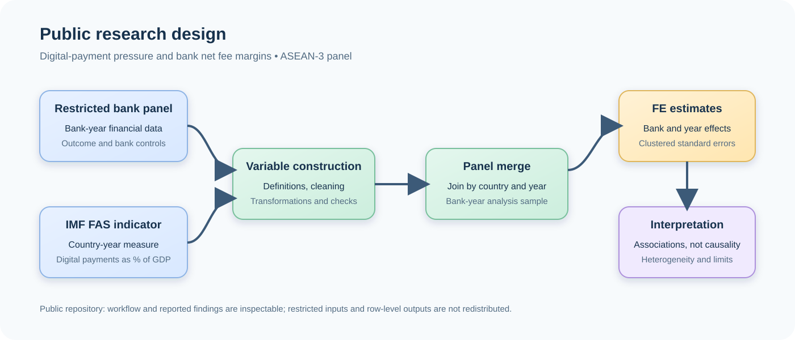

Research
Digital payment pressure and bank net fee margins
Thesis title: The Impact of Digital Payment Pressure on Banks' Fee-Based Income: Evidence from ASEAN Banking Markets
Evidence from an ASEAN-3 bank panel, 2014–2022
This page is the readable version of my undergraduate research. It states the question, how the panel was built, what the fixed-effects models show, and — at the same length — what the design cannot tell you.
- 344 bank-year observations
- 39 commercial banks
- ASEAN-3 Indonesia, Malaysia, Thailand
- 2014–2022 annual observations
Why the direction of the relationship is not obvious
Is digital payment pressure associated with bank net fee margins in Indonesia, Malaysia, and Thailand?
The question grew out of my Business Analytics Tableau project (December 2025). The study does not assume that digital payments help or hurt banks. Digitalisation can affect fee income through several channels at once, and they push in different directions:
Transaction and service expansion
Digital channels lower friction, increase usage, and can support new payment or merchant services.
Competitive pressure
FinTech firms, payment networks, and digital-first competitors may compress prices or reallocate payment-related revenue.
Customer relationships and cross-selling
Frequent digital engagement and transaction data can create opportunities in deposits, lending, insurance, or wealth management.
Institutional and market differences
Payment infrastructure, regulation, financial inclusion, and bank business models differ substantially across countries.
Two competing hypotheses, and two refinements
| Hypothesis | Theory | Prediction | Result |
|---|---|---|---|
| H1a Substitution | Contestable markets (Baumol, 1982); liquidity adjustment costs (Verdier, 2024) | β₁ < 0 | Consistent: negative and significant at 5% in the pooled log model |
| H1b Complementarity | Delegated monitoring (Diamond, 1984); bank–FinTech coexistence (Thakor, 2020); API and B2B alliances (Brandl and Hornuf, 2020) | β₁ > 0 | Not supported |
| H2 Scale heterogeneity | Scale economies in technology (Berger, 2003) | Larger banks more resilient | Not supported: interaction −0.003930 (n.s.) |
| H3 Non-linear transition | Substitution first, complementarity as markets mature | U-shape, β₂ > 0 | Not supported: squared term −0.001988 (n.s.) |
H1a and H1b need not be mutually exclusive: competitive pressure may dominate early, while intermediation and platform channels strengthen as infrastructure matures, which is what H3 tests.
Because these channels can offset each other, a negative coefficient would not by itself show that digital payments reduce bank income. It could reflect market composition, country-specific institutions, or omitted factors that move together with both payment activity and bank outcomes.
Two data levels joined into one panel
Bank-year financial variables form the outcome and controls; a country-year indicator measures digital payment activity.
| Item | Value |
|---|---|
| Countries | Indonesia, Malaysia, Thailand |
| Banks | 39 publicly traded commercial banks and banking groups (including 3 Islamic and 5 digital-challenger banks) |
| Bank-year observations | 344 |
| Period | 2014–2022 |
| Study design | ASEAN-5 was originally planned; the selected indicator was not consistently available for the Philippines and Singapore |
| Observations by country | Indonesia 200 · Malaysia 81 · Thailand 63 |
| Period rationale | 2014: 4G roll-out and systematic payment monitoring begin; 2022: last year with complete audited reports for every bank. |
Bank-year variables
Net_Fee_Margin— net fee and commission income relative to total assets, proxied by Compustat Global total non-interest income — the closest series available consistently across the three markets, which also contains trading and other non-interest revenue.Size_USD— natural log of total assets converted into US dollars.Capital_Adequacy_Proxy— equity-to-assets ratio (EQRAT in the thesis): book equity / total assets.Credit_Risk— loan loss provisions / total assets.Interest_Expense_Ratio— interest expense / total assets.Deposit_Ratio— total deposits / total assets.
Country-year digital payment pressure
The explanatory variable comes from the IMF Financial Access Survey indicator IMF_FAS_FCMIBT, used with the unit PT_GDP: mobile and internet banking transactions as a percentage of GDP. It counts transactions processed by banks themselves, not by non-bank FinTech platforms. Between 2014 and 2022 it rose from 111% to 268% of GDP in Indonesia, from 366% to 719% in Malaysia and from 124% to 532% in Thailand. In the linear models one unit equals 10 percentage points of GDP (DPP_10pct_GDP); the refined models use ln(1 + DPP).
- The indicator source is public; generated extraction files are not committed to the repository.
- Availability, definitions, and reuse terms can change, so the workflow documents how the indicator was discovered and selected instead of treating it as a black box.
Fixed effects, clustered inference, and explicit cleaning rules
The workflow separates panel preparation, indicator extraction, merging, estimation, and robustness checks, so each decision can be inspected on its own.

Specification
- NFM is bank i's net fee margin in year t.
- DPP is the digital-payment-pressure measure for country c in year t.
- X is a vector of bank-level controls.
- α is a bank fixed effect and λ is a year fixed effect, which absorb persistent bank differences and common time shocks.
- The coefficient β is a conditional association inside the stated model, not an automatically causal effect.
How the models were run
- A complete-case sample is formed on the required outcome, explanatory variable, and controls so specifications are comparable.
- Continuous variables are winsorised at the 1st and 99th percentiles within the analysis sample.
- Standard errors are clustered at the bank level to account for dependence within bank histories. Driscoll–Kraay standard errors, robust to cross-sectional dependence, are reported alongside.
- Country subsamples keep bank fixed effects and drop year effects, because a country-year explanatory variable would otherwise be absorbed in a single-country model.
From baseline to robustness
- Scaled digital-payment pressure (
DPP_10pct_GDP). - Scaled pressure with additional financial controls, then a full-controls specification.
- A logarithmic baseline (
Log_Digital_Payment_Pressure). - A bank-size interaction (
Digital_x_LargeBank). - A centred nonlinear specification with a squared log term.
- Country-subsample estimates of the log specification.
- Robustness: Driscoll–Kraay standard errors, a Mundlak between/within decomposition, excluding 2020, a net-interest-margin placebo, a one-year lag, and excluding Islamic and digital-challenger banks.
Limited linear evidence, a significant logarithmic association
All models use the same 344 bank-year observations, so the specifications are directly comparable.
| Specification | Coefficient | Std. error | Observations | R² | Interpretation |
|---|---|---|---|---|---|
| Main model, scaled measure | −0.000292* | (0.000177) | 344 | 0.0065 | Marginal Negative association with marginal statistical evidence. |
| Main model with controls | −0.000264 | (0.000201) | 344 | 0.0241 | Not significant Negative sign but no statistical evidence. |
| Full controls model | −0.000208 | (0.000333) | 344 | 0.0739 | Not significant Negative sign but no statistical evidence. |
| Log baseline model | −0.010171** | (0.005116) | 344 | 0.0757 | Significant Negative, statistically significant pooled association. |
| Size interaction model | −0.006507 | (0.005227) | 344 | 0.0796 | Not significant Neither the Large Bank dummy nor its interaction with log pressure (−0.003930) is significant. |
| Nonlinear model | −0.010829** | (0.005432) | 344 | 0.0766 | Significant Negative linear term; the squared term (−0.001988) is not significant, so there is no U-shaped recovery. |
How to read this table
- The scaled and log models use different units, so the coefficient sizes are not comparable across rows; only the sign and significance are.
- The pooled log association is statistically significant, but country subsamples are heterogeneous, and decomposition suggests the pooled result may substantially reflect differences between countries rather than a shared within-country mechanism.
- Statistical significance is not the same as economic importance, and neither is the same as causality.
- Economic size: in the log model, doubling digital-payment intensity is associated with a net fee margin about 0.71 percentage points of total assets lower (roughly 70 basis points), about 39% of the sample mean of 1.81%. Against the median (1.10%) the share is larger, so the percentage depends on the base.
Robustness and diagnostics
| Test | Estimate | Interpretation |
|---|---|---|
| Driscoll–Kraay SE (Model 4) | −0.0102, SE 0.0035, p = 0.004 (bank-clustered p = 0.048) | Still significant when cross-sectional dependence is allowed |
| Driscoll–Kraay SE (Model 6 linear term) | −0.0108, SE 0.0032, p = 0.001 (bank-clustered p = 0.047) | Same |
| Mundlak decomposition: within | −0.0049, SE 0.0079, p = 0.53 | No within-country association |
| Mundlak decomposition: between | −0.0124, SE 0.0175, p = 0.48 | Same sign and size as the pooled estimate; imprecise with three countries |
| Within-only fixed effects | −0.0035, SE 0.0083, p = 0.67 | Not significant |
| Country subsamples, no year effects | Indonesia −0.001420 (0.014970); Malaysia +0.005521 (0.005378); Thailand +0.001687* (0.000870) | Not uniform; Thailand weakly positive |
| Exclude 2020 | Model 4 −0.008006 (0.004941), p = 0.106, n = 305 | Similar size, less precise |
| Net interest margin placebo | 0.004125 (0.005450), p = 0.45, n = 335 | No effect on the lending margin: the pressure shows in the fee channel |
| One-year lag of regressor | −0.015901* (0.008475), p = 0.062, n = 305 | Larger and negative; eases the reverse-causality concern |
| Exclude Islamic and digital-challenger banks | −0.004328 (0.002631), p = 0.101, n = 273, 31 banks | Smaller; part of the pooled size comes from this high-margin segment |
The pooled negative association comes mainly from differences between countries — Indonesia averages a net fee margin of 0.022 at a digital intensity of 164% of GDP, Thailand 0.012 at 271%, Malaysia 0.012 at 540% — rather than from change within each country over time. That is the pattern contestable-markets theory predicts, because contestability is a property of market structure and entry conditions differ: Indonesia licenses e-money and peer-to-peer providers openly, Malaysia has issued digital-bank licences against mature incumbents, and Thailand's virtual-bank framework is led by incumbents — and it is in Thailand that the coefficient is weakly positive.
What this study cannot claim
The results are conditional associations, not causal estimates. Eight constraints explain why.
- Interpretation: a coefficient describes an association under a model, not an identified causal effect.
- Data level and cluster counts: the explanatory measure varies only at the country-year level (about 27 distinct values across three countries and nine years), so the pooled estimate rests on few macro movements. Bank-level clustering (39 clusters) does not address cross-sectional correlation, which is why Driscoll–Kraay errors are also reported; country subsamples also have few clusters (9 Malaysian and 7 Thai banks).
- Coverage: three countries are included, so the study should not be generalised to ASEAN-5 or all banking markets.
- Omitted variables: regulation, payment infrastructure, macroeconomic conditions, and market concentration may affect both digital payments and fee margins.
- Income aggregation: the outcome is total non-interest income over assets, so it cannot separate payment, card, merchant-service or wealth-management fees, and it also contains trading and other non-interest revenue.
- Data access: the underlying bank panel cannot be redistributed, so the thesis regressions are inspectable but not publicly rerunnable.
- What the pressure measure counts: the IMF indicator records banks' own mobile and internet banking transactions, not activity on non-bank FinTech platforms, so it measures the digital intensity banks operate in rather than direct FinTech competition.
- Sample balance and timing: Indonesian banks supply 200 of the 344 observations (58%), weighting the pooled estimate toward that market, and reverse causality cannot be ruled out, although the lagged-regressor test reduces the concern.
What I would study next
The limitations above read as a research programme rather than a dead end. Four questions follow directly from them.
Separating within-country change from between-country structure
The decomposition is the starting point: the within-country coefficient is −0.0049 (p = 0.53) against a between-country −0.0124. The open question is what data would identify a within-country effect.
Which banks, and which business models
Size alone did not explain exposure: neither the Large Bank dummy nor its interaction was significant. Better measures of digital resilience, such as IT expenditure or the depth of platform and API partnerships, are the next step, alongside ownership and reliance on fee income.
Designs that can identify a policy event
Staggered payment-licensing reforms are candidate events: Indonesia's e-money and peer-to-peer licensing, Malaysia's digital-bank licences (2020) and Thailand's virtual-bank framework (2024). A difference-in-differences or event-study design would first have to pass parallel-trends and treatment-definition tests, with inference suited to few clusters, such as a wild-cluster bootstrap.
Finer revenue data than a single aggregate margin
Payments, cards, merchant services, and wealth management may not move together. Disaggregated fee income, and a payments measure closer to the bank than a country-year ratio, are the two changes most likely to sharpen the question.
This is the direction I am preparing to pursue in master's study. Nothing on this page claims it as a result of the completed project.
Method transparency without data redistribution
The repository separates what can be rerun from what can only be inspected.
| Component | Publicly reproducible? | Notes |
|---|---|---|
| Synthetic fixed-effects demonstration | Yes | Self-contained in examples/run_example.py, with a deterministic synthetic panel. |
| IMF FAS retrieval and indicator extraction | Partly | The source is public, but availability and terms can change; generated outputs are not committed. |
| Bank-panel construction and thesis regressions | No | Required WRDS-derived data and intermediate files are restricted and excluded. |
| Reported thesis findings | Inspectable only | The results are documented, but public files cannot regenerate them without the restricted inputs. |
Public demonstration in three commands
The example uses deterministic synthetic data. It demonstrates the Python and linearmodels workflow; it is not evidence for the thesis.
Where the research should go next
- Disaggregate non-interest income into payments, cards, merchant services, and wealth management.
- Broaden country coverage to restore the ASEAN-5 design.
- Move towards identification: staggered payment-licensing reforms as quasi-experiments, difference-in-differences or event-study designs, an external instrument for digital adoption, and dynamic panel methods. (A one-year lag of the regressor is already reported in the thesis.)
- Strengthen inference with few clusters: a wild-cluster bootstrap now, and country-level clustering once more countries are added. (Driscoll–Kraay standard errors are already reported in the thesis.)
Generative AI use
Tools used: ChatGPT, Claude, Google Gemini, and NotebookLM.
- Brainstorming and identifying weaknesses in ideas.
- Preliminary summaries of concepts and literature.
- Planning the research schedule.
- Grammar and spelling checks.
- Assistance with regression and data-cleaning code.
- Reference formatting.
All outputs were critically reviewed and independently verified.
Documentation behind this page
Everything below lives in the public repository. Restricted data, course submissions, and row-level outputs are deliberately excluded.
- Public research report Design, results, limitations, and data-access boundaries.
- Variable definitions Conceptual definitions without restricted observations.
- Methodology appendix Workflow, specification, cleaning, and inference choices.
- Main regression code Final specifications, retained for transparency. Robustness tables F3–F6 are reported in the thesis; their code is not yet in the public repository.
- IMF Financial Access Survey Source of the country-year digital payment indicator.
The repository keeps bank identifiers, raw and derived datasets, submission drafts, feedback, and signatures out of the public surface. Check current WRDS, IMF, and university terms before redistributing any data or supporting material.